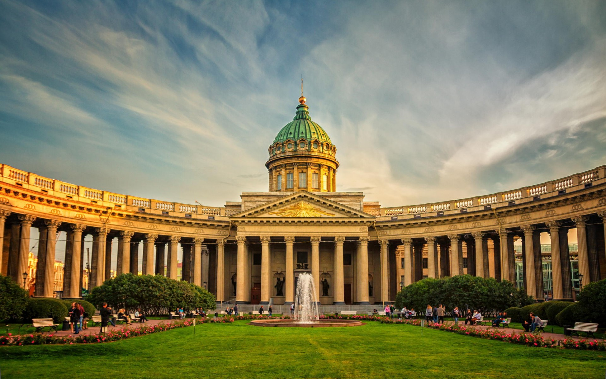
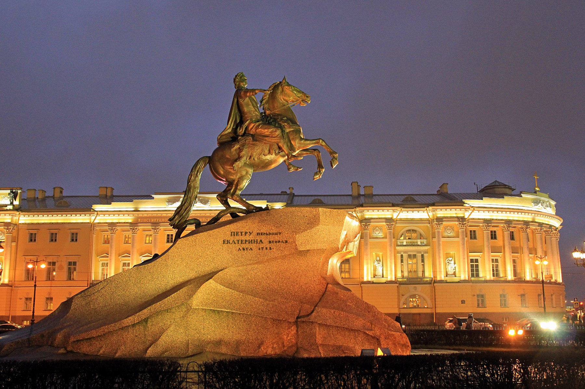
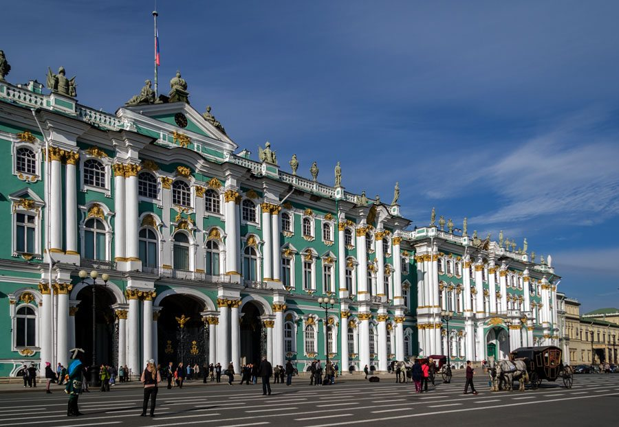
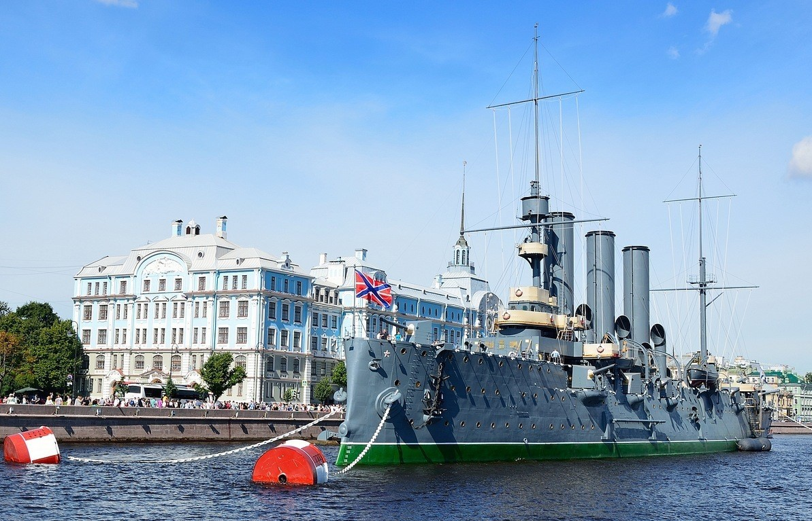
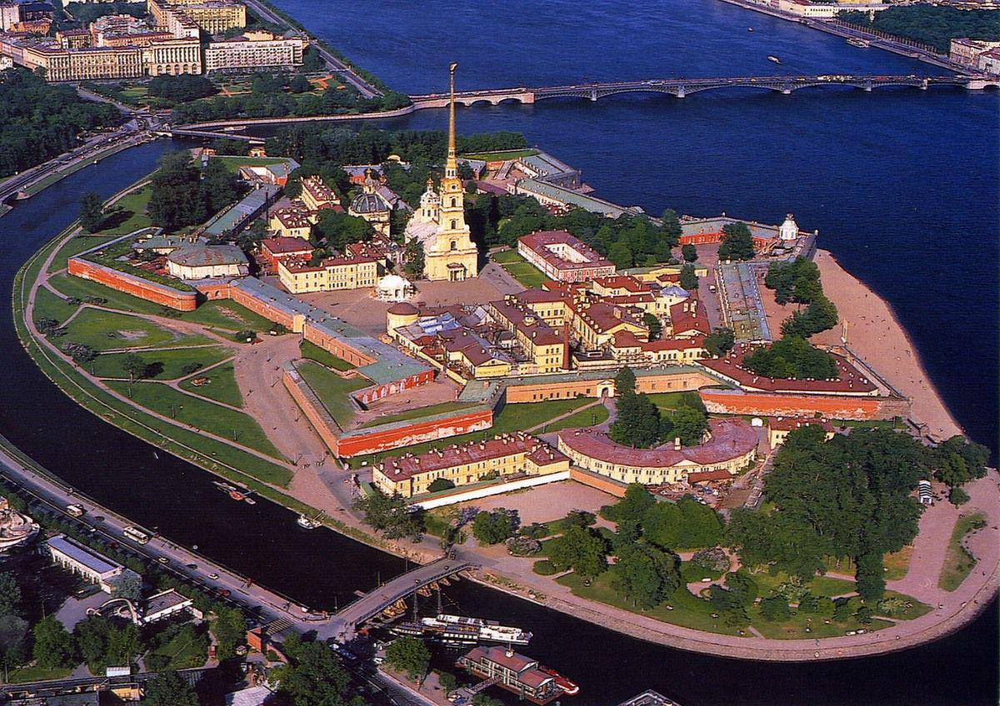
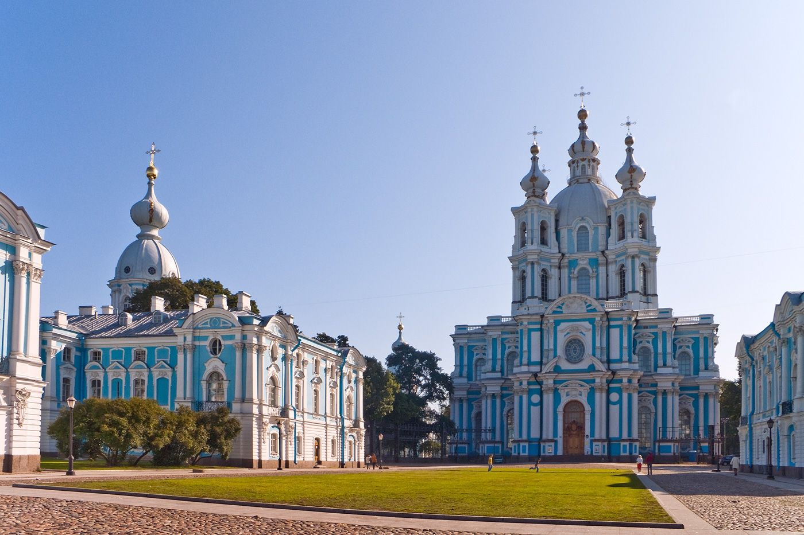

|  | Каза́нский собо́р (Собор Казанской иконы Божией Матери) — один из крупнейших храмов Санкт-Петербурга. Построен на Невском проспекте в 1801—1811 годах архитектором Андреем Воронихиным в стиле русского классицизма для хранения чтимого списка чудотворной иконы Божией Матери Казанской. После Отечественной войны 1812 года приобрёл значение памятника русской воинской славы. В 1813 году здесь был похоронен полководец Михаил Илларионович Кутузов и помещены ключи от взятых городов и другие военные трофеи. |
|  | Ме́дный вса́дник - монументальный конный памятник первому российскому императору Петру Великому, созданный в 1768–1778 годах под руководством французского скульптора Этьена Мориса Фальконе, открытый на Сенатской площади в Санкт-Петербурге 7 (18) августа 1782 года. Один из символов Санкт-Петербурга и одно из самых известных произведений скульптурного классицизма. Памятник изготовлен из бронзы. |
|  | Эрмита́ж (от фр. ermitage — место уединения, келья, приют отшельника, затворничество), Госуда́рственный Эрмита́ж (сокр. ГЭ; до 1917 года — Императорский Эрмитаж) — российский государственный художественный и культурно-исторический музей в Санкт-Петербурге, одно из крупнейших в мире учреждений подобного рода. Главный музейный комплекс Эрмитажа расположен в историческом центре Санкт-Петербурга, включает в себя шесть связанных между собой зданий — Зимний дворец, Запасной дом Зимнего дворца, Малый Эрмитаж, Большой (Старый) Эрмитаж, Новый Эрмитаж и Эрмитажный театр. |
|  | «Авро́ра» — крейсер 1-го ранга Балтийского флота типа «Диана». Назван в честь парусного фрегата «Аврора», прославившегося при обороне Петропавловска-Камчатского в годы Крымской войны. Во время русско-японской войны участвовал в походе Второй Тихоокеанской эскадры, закончившимся Цусимским сражением. Крейсер принимал участие также в Первой мировой войне. Холостой выстрел с «Авроры» явился сигналом к началу штурма Зимнего дворца; крейсер стал одним из главных символов Октябрьской революции. |
|  | Петропа́вловская кре́пость (официальное название — Санкт-Петербу́ргская, в 1914—1917 годах — Петрогра́дская крепость) — старейший памятник архитектуры Санкт-Петербурга, крепость I класса (согласно классификации крепостей Российской империи). Расположена на Заячьем острове, в Санкт-Петербурге, историческое ядро города. Дата закладки крепости 16 (27) мая 1703 года является датой основания Санкт-Петербурга. Никогда не использовалась ни в одном сражении. С первой четверти XVIII века до начала 1920-х годов служила тюрьмой. С 1924 года является государственным музеем. |
|  | Воскресе́нский всех учебных заведений Смольный собор (Воскресения Христо́ва Смо́льный собо́р, Смо́льный собо́р) — православный храм в Центральном районе Санкт-Петербурга. Входит в состав архитектурного ансамбля Смольного монастыря. Воскресенский Смольный собор исторически является храмом учебных заведений Санкт-Петербурга, храмом учащихся, поэтому основным направлением деятельности клира и мирян храма является духовно-нравственное просвещение юношества. |